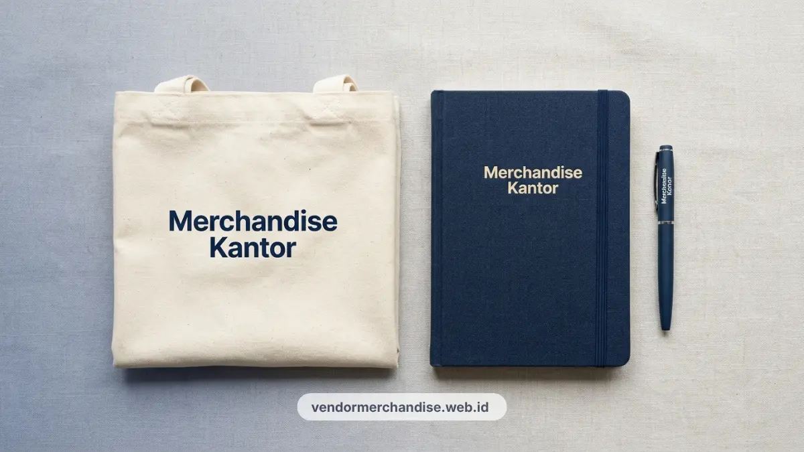

Anggaran workshop yang terbatas bukan berarti harus mengorbankan kesan profesional di mata peserta. Bagi instansi pemerintah maupun perusahaan swasta di Jakarta yang sering menggelar pelatihan, bimtek, atau workshop internal, seminar kit sederhana namun fungsional justru menjadi pilihan paling tepat sasaran.
Kami melayani pemesanan seminar kit workshop dalam skala kecil hingga menengah dengan harga produksi yang transparan dan waktu pengerjaan yang terukur. Paket ini melengkapi kebutuhan instansi yang sebelumnya telah memilih seminar kit Jakarta untuk berbagai skala acara korporat, kini dengan fokus pada efisiensi anggaran tanpa kompromi kualitas.
Komponen Paket Dasar Seminar Kit Workshop
Paket seminar kit workshop yang ramah anggaran umumnya terdiri dari tiga komponen inti yang fungsional dan mudah dipersonalisasi dengan identitas instansi.
- Notes atau buku catatan: Tersedia dalam format A5 atau B5 dengan cover art carton, spiral, atau jilid lem. Halaman dalam bisa polos, bergaris, atau berkotak sesuai kebutuhan pelatihan. Cover depan bisa diaplikasikan cetak logo, nama instansi, atau tema workshop. Standar notes dan pulpen custom logo untuk kantor bisa diterapkan di sini dengan biaya produksi yang efisien.
- Pulpen ballpoint: Pilihan pulpen plastik standar atau ballpoint metal entry-level keduanya bisa diaplikasikan sablon atau engraving logo instansi. Untuk workshop yang membutuhkan banyak aktivitas menulis, pulpen dengan tinta lancar dan pegangan nyaman menjadi prioritas utama.
- Tote bag kanvas atau non-woven: Berfungsi sebagai wadah materi workshop sekaligus membawa semua perlengkapan peserta. Pilihan bahan kanvas memberikan kesan lebih kokoh dan tahan lama, sementara non-woven menjadi alternatif ekonomis yang tetap rapi saat dibagikan kepada peserta.
Strategi Hemat Anggaran Tanpa Mengurangi Kualitas
Kunci mendapatkan seminar kit berkualitas dengan anggaran terbatas terletak pada pemilihan material dan strategi pemesanan yang tepat. Beberapa pendekatan yang bisa diterapkan instansi di Jakarta:
- Fokus pada item fungsional: Prioritaskan produk yang benar-benar dipakai peserta selama dan setelah workshop, seperti notes dan pulpen, daripada item dekoratif yang cepat dilupakan.
- Pilih finishing cetak yang efisien: Sablon satu warna atau dua warna pada notes dan tote bag sudah cukup untuk tampil identitas instansi yang kuat, tanpa harus menggunakan full color printing yang lebih mahal.
- Pesan sesuai kebutuhan aktual: Hindari over-ordering. Mulai dari 50 pcs sudah mendapatkan harga kompetitif, dan bisa ditambah secara bertahap untuk kebutuhan workshop berikutnya.
- Manfaatkan paket bundling: Vendor yang menawarkan paket bundling notes, pulpen, dan tote bag dalam satu harga biasanya memberikan efisiensi biaya lebih besar dibandingkan memesan masing-masing produk secara terpisah.

Pilihan Material Tote Bag untuk Workshop
Tote bag adalah komponen yang paling terlihat saat peserta keluar dari venue workshop. Pilihan material yang tepat menentukan persepsi instansi di mata peserta dan tamu.
- Kanvas 12 oz: Material paling populer untuk workshop karena terasa kokoh, bisa dilipat, dan layak dibawa ke mana-mana setelah acara. Permukaan kanvas mendukung sablon dengan detail yang cukup tajam untuk logo dan teks instansi.
- Non-woven laminasi: Alternatif ekonomis yang ringan dan tersedia dalam beragam warna. Cocok untuk workshop singkat seperti sosialisasi kebijakan atau bimtek satu hari yang tidak membutuhkan daya tahan tinggi.
- Drill atau bahan spunbond: Pilihan di antara kanvas dan non-woven, memberikan kesan lebih rapi namun tetap terjangkau. Banyak digunakan untuk workshop instansi pemerintah dengan kebutuhan seragam tampilan.
Cara Pesan Seminar Kit Workshop di Jakarta
Proses pemesanan seminar kit workshop di Jakarta dirancang sesimpel mungkin agar panitia bisa fokus pada persiapan acara, bukan pada urusan teknis pengadaan merchandise.
- Konsultasi kebutuhan: Sampaikan jumlah peserta, tanggal acara, dan anggaran per peserta yang tersedia. Tim kami akan merekomendasikan kombinasi produk yang paling sesuai.
- Pengiriman file desain: Kirimkan file logo instansi dalam format vektor (AI, EPS, atau SVG) beserta panduan warna jika ada. Tim desain kami akan menyiapkan mockup untuk persetujuan sebelum produksi dimulai.
- Approval desain: Setelah mockup disetujui, proses produksi dimulai. Tidak ada perubahan desain setelah approval untuk menjaga ketepatan waktu pengerjaan.
- Produksi dan pengiriman: Estimasi produksi 5 hingga 10 hari kerja, dilanjutkan pengiriman langsung ke venue workshop atau kantor instansi di Jakarta dan Jabodetabek.

Kenapa Instansi Jakarta Memilih Kami untuk Seminar Kit Workshop?
Kami memahami bahwa instansi pemerintah dan perusahaan swasta di Jakarta memiliki proses pengadaan yang berbeda-beda, mulai dari pembelian langsung hingga tender terbatas. Layanan kami dirancang fleksibel untuk mengakomodasi berbagai mekanisme pengadaan tersebut.
Dengan pengalaman melayani berbagai instansi di Jabodetabek, kami mampu menyediakan dokumen penawaran resmi, faktur pajak, dan sertifikat produksi jika dibutuhkan untuk keperluan administrasi pengadaan. Sistem produksi kami yang terstruktur memastikan seminar kit workshop tiba tepat waktu sebelum acara dimulai, sejalan dengan layanan paket merchandise seminar untuk peserta yang sudah terbukti andal.
Konsultasikan kebutuhan seminar kit workshop instansi Anda bersama kami sekarang dan dapatkan penawaran terbaik sesuai anggaran yang tersedia.